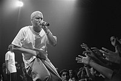
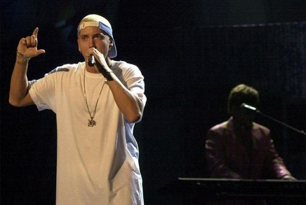

Urodził się on w Usa 1972 17 października. Tak naprawde nazywa się on Marshall Bruce Mathers III.Ksywka Eminem pochodzi od pochodzi od inicjałów imienia i nazwiska: M(arshall) M(athers).
Swoją przygodę z muzyką rap rozpoczął za dzięki ścieżce dźwiękowej do filmu pod tytułem „Reckless”. Na przełomie 1995/1996 wydał swój pierwszy album ,,Infinite". Dzięki raperowi DR.Dre który złożył mu propozycje kontraktu ze swoją dość znaną wytwórnią płytową Athemath bardzo dobrze krytycy i ludzie przyjeli płytę ,,The Slim Shade LP".
Jedną z jego pierwszych albumów był album ,,Infinite" a z płyt ,,The Slim Shade LP". Eminem nagrał również dwie płyty z rozpoznawalnym zespołem D12.
- Eminem początkowo chciał być twórcą komiksów, dopiero później raperem. - Nie należał on do dobrych uczniów, 3 razy powtarzał 9 klase. - Z jedną z partnerek życiowych ożenił się dwukrotnie - jego drugie małżeństwo trwało 82 dni.
„Jestem człowiekiem, obmyślę nowy plan. Czas, abym powstał, przemierzył nowe lądy… Czas, abym na serio wziął sprawy w swoje ręce. Wybierając takie życie, nigdy więcej nie spojrzę za siebie. Odchodzę, wiem, dokąd podążam. Idąc za śladami stóp, wytyczam własną i jedyną ścieżkę…” „Taaa, trzy razy musiałem powtarzać dziewiątą klasę, ale nie sądzę, że powód tego koniecznie musiał być taki, że jestem głupi.”